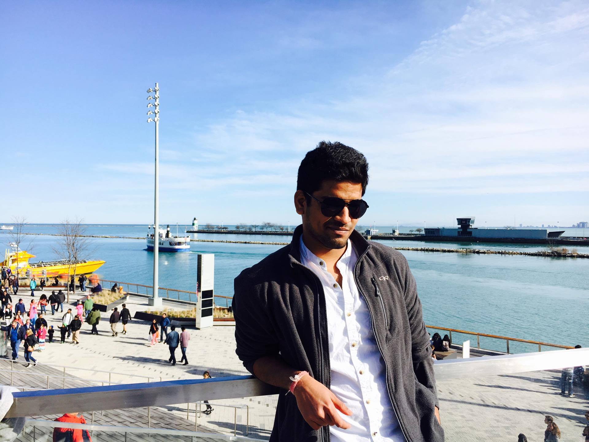

Avinash Sankarasetty
I am Avinash Sankarasetty Graduate student pursuing master in university of missouri kansas city.

Personal Information
Work Experience
Electrical Trainee at a I.Veera Sekhara Rao firm, near Tenali, Andhra Pradesh, India
Sep 2014-Sep 2015
- Designed, constructed and maintained overhead and underground transmission ,distribution power lines,
Departmental central lighting works and other electrical works
- Directed and assisted crew in attaching cross-arms, insulators, lightning arresters, switches, conductors and auxiliary
equipment to poles prior to their erection
- Worked with energized distribution and transmission circuits using insulated tools
My Youtube Channel
MyGitHUb Account